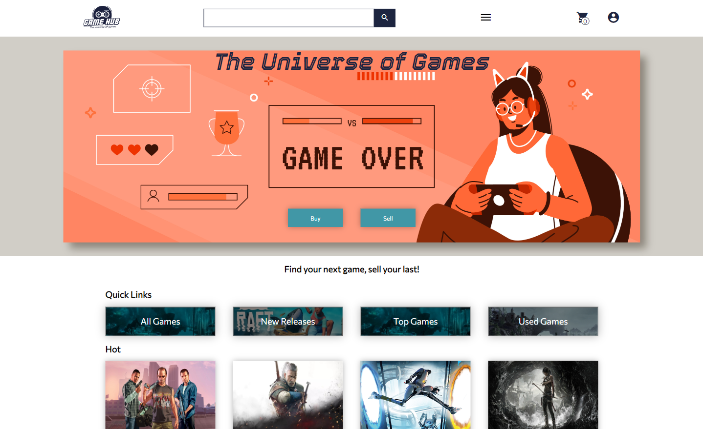
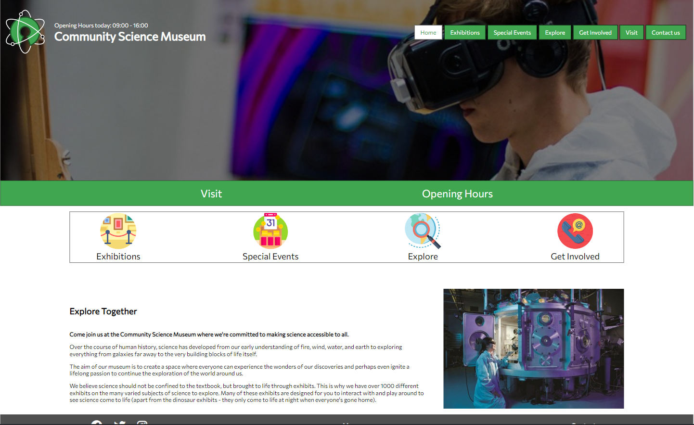

Hi, I'm Eric
Welcome to my portfolio. Here you can see the projects I'm most proud of, or scroll down to read more about me.

GameHub
A game marketplace for my cross-course project at Noroff. Made with RAWG API.

Community Science Museum
A website for a local science museum created for my semester project 1 at Noroff.